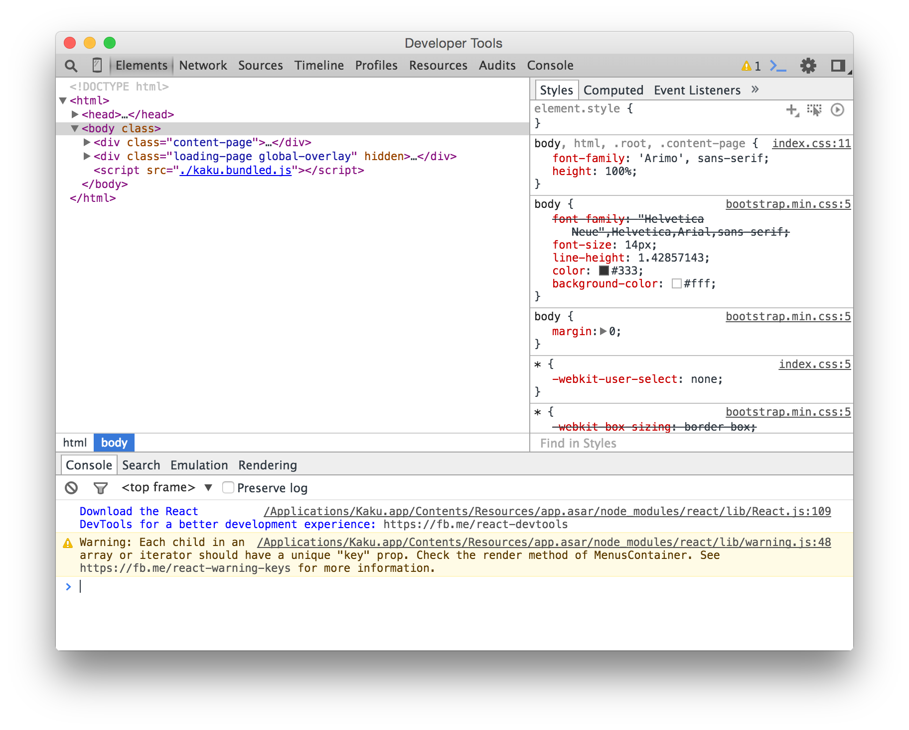
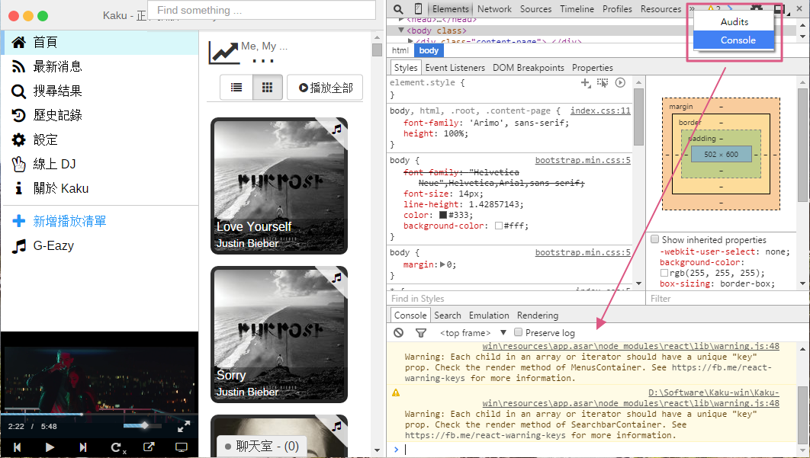
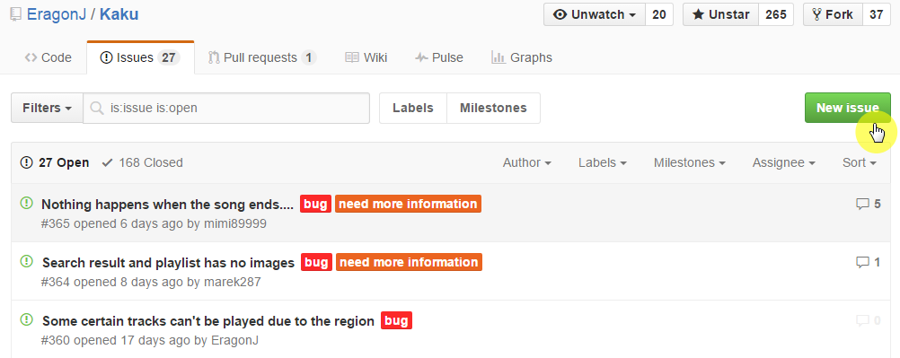
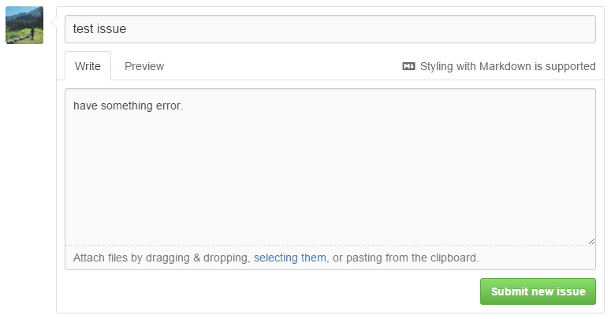

- Important： You need have a Github account.
- Provide your problem information：
- Kaku version
- OS platform and version
- Open DevTools and switch to Console Panel and copy the Error Message：
- Mac：cmd + option + i
- Linux：ctrl + alt + i
- Windows：ctrl + alt + i
- Maybe you can snap image give our more information.
- Which platform you are using to listen to music. （Youtube、Vimeo、SoundCloud）
- Which song caused the problem or you can even use
settings -> backup to localfeature to export your playlist contain that song and share it for debugging use.- Any error you found on the UI part.
- Finally, open a new issue report bug.
Click cmd + option + i open it：

Click ctrl + alt + i open it：

then you can copy error message from Console panel.
Click here you can open a new issue.
Click New Issue.

You can write your error message or snap image pass here use Markdown format,
then you can preview your content, finally submit a new issue.
